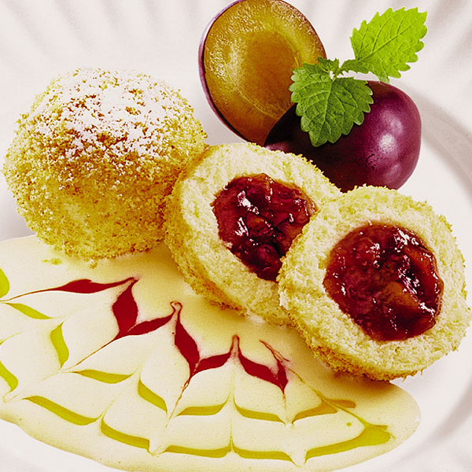

Имбирное печенье
Предлагаю вам испечь имбирное печенье 3D в форме елочек. От таких печенюшек будут в восторге не только дети, но и взрослые, а если еще напечь пряничных домиков для чайных кружек, то праздник превратится в настоящую зимнюю сказку. Фото мастер-класс, а также три рецепта приготовления имбирного печенья.
* * *
Гомбовцы
 В русской кухне это можно было бы назвать ленивыми варенниками , в чешской кухне - сладкие кнедлики. Особое внимание к ним питают любители венгерской и западно-украинской (Закарпатье) кухни. Гомбовцы (венгерское название *gombóc*- гомбоц), булочки из дрожжевого теста на пару, творога или картофеля, чаще всего со сладкими, ягодными начинками. Есть у гомбовцев и своя особенность - после приготовления булочки обсыпают поджаренными сухарями.